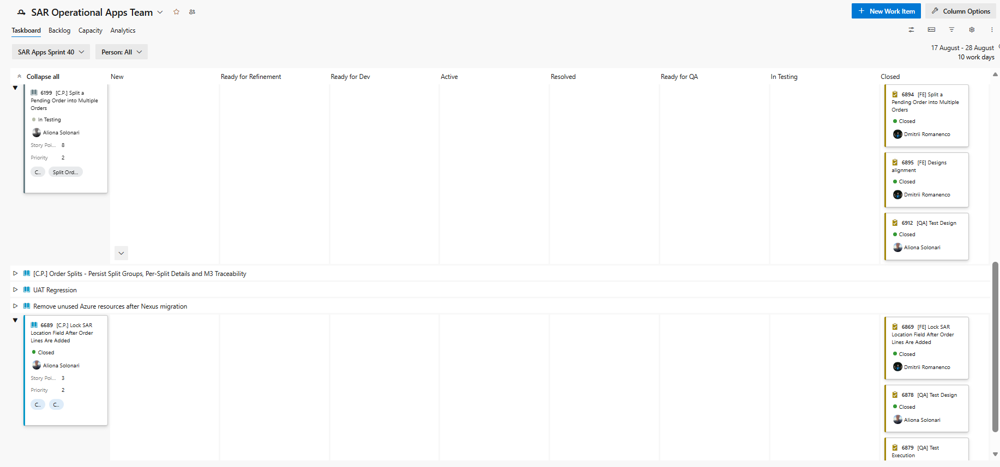

Stories of software that failed expensively, the QA profession for real, and how our semester could work.
Senior QA Engineer at Amdaris, an Insight company · ISTQB® Certified Tester
I build test automation frameworks from scratch — Playwright with .NET and TypeScript — running in CI on every deploy.
I designed and ran an AI-for-QA programme for an external client: 20 engineers, from Middle to QA Lead.
QA Guild Steering Committee · core member of QA Community Moldova.
I started out teaching: 2 years showing kids Scratch, Unity and HTML — so "naive" questions are my favourite kind.
UI, API and database — manually where I explore, automated where I repeat.
A test failed overnight: real bug or unstable test? AI helps with the diagnosis, I validate it.
Standup, questions for the team, and I argue why a bug must be fixed now.
Scan the code → answer from your phone. We discuss the word cloud live.
Three real stories. For each one: what happened, the actual root cause, how it was found, and what would have prevented it.
of flight before it broke apart and self-destructed
rocket plus four scientific satellites, lost
Europe's new heavy launcher, 10 years of development, on its very first flight.
The navigation software had worked perfectly for years — on the previous rocket, Ariane 4.
The navigation unit reused Ariane 4 code. A 64-bit decimal value (horizontal velocity) was converted into a 16-bit integer.
Ariane 5 flew much faster, so the value no longer fit → overflow → the unit shut itself down. The backup unit ran the same code and died the same way, a fraction of a second earlier.
Only after the explosion, by an inquiry board reading the telemetry.
The shutdown sent a diagnostic code onto the data bus. The flight computer read those bits as if they were real flight data, swivelled the engine nozzles to the limit, and the rocket tore itself apart.
Running the software against Ariane 5's own trajectory data — this was never done.
Re-validating reused code in its new context. And noticing that this calculation was only needed before liftoff, so it should not have been running at all.
from market open until the system was stopped
unintended orders sent to the stock exchange
One of the largest US trading firms at the time. It never recovered and was bought out months later.
The new code being deployed that morning worked exactly as designed.
A manual deployment to 8 servers. An engineer copied the new code to only 7 of them.
The new feature reused an old configuration flag. On the forgotten server that flag switched on dead code from 8 years earlier, which started buying and selling with no limits.
Warning messages were generated before the market opened — but they were not treated as critical and nobody acted on them.
Then the market made it obvious. Under pressure the team removed the new code from all 8 servers — which left the old code running everywhere and made it worse.
An automated deployment that verifies every server, instead of a human remembering.
Deleting dead code, and never reusing an old flag for a new purpose. Alerts that actually wake someone up. And a kill switch to stop trading in one action.
known accidents with massive radiation overdoses
patients died; others were severely injured
A radiotherapy machine used to treat cancer patients in the US and Canada.
The manufacturer's first answer to the hospitals was: this machine cannot overdose a patient.
A timing bug: if the operator entered the treatment settings and corrected them very fast (within about 8 seconds), the machine fired a high-power beam while the protective target was not in position.
Older models had physical safety locks. On this model they were removed — the software alone was trusted.
By a hospital physicist who refused to accept "cannot reproduce". He sat at the console and practised the exact typing sequence until he could trigger the fault on demand.
Until then the machine only showed a cryptic "Malfunction 54", which operators had learned to dismiss.
Testing the way real, experienced operators work — fast, making corrections — not only the calm ideal sequence.
Keeping the hardware locks. Error messages a human can understand. And taking the first report seriously instead of denying it.
There is no such thing as "a tester". There is a family of specialisations — and a path between them.
Explores, designs tests, reports bugs. The classic entry point.
Writes code that tests code: Playwright, Selenium, CI/CD.
"Does the site survive 10,000 users at once?" — k6, JMeter.
Thinks like an attacker, to protect the product. OWASP, pentesting.
Test strategy, the team, "do we release or not?".
The newest direction: agents that generate and maintain tests — my favourite part.
Around €700–800 to start, on average.
Something like €1500 — but it really depends on what you can do.
From €2500+, depending on skills and company.
Manual or automation · your actual skills and knowledge · English · the company (local product, outsourcing, foreign client).
On rabota.md the entire "QA Tester" category had about 6–8 openings when I checked. Public salary comparators have almost no real QA data — most hiring here happens via LinkedIn, referrals and company sites.
Scan to join the Telegram channel 👉
What the work looks like, concretely — from standup to demo.
15 min: what I did, what I'm doing, what blocks me.
"As a user, I want to reset my password…" — I read the acceptance criteria.
I check what should work, then explore beyond the ideal path.
A clear bug: steps, expected vs actual, evidence. The developer reproduces it on the first try.
The fix arrived → I verify the bug and everything around it.
The team shows the sprint. QA knows best what really works.

Three minutes. Write down as many checks as you can for an ordinary pen.
Work alone or talk with the person next to you — whatever helps you think.
No idea is too strange. Quantity first — we will look at what you came up with in a moment.
Keep your list. We will come back to it later in the course.
Here is the shape I have in mind. It is not final — I want your input before we lock it.
Why we test, how testing fits into building software, and finding problems before any code runs.
Designing good tests, writing them down, and reporting bugs that actually get fixed.
Working in a team, browser tools, APIs, databases, and your first automated test.
Performance, security, AI in testing — and where you go from here.
You "adopt" one real, public web application and test it all semester.
Every lab adds a piece, so the work accumulates instead of restarting each week.
At the end you show what you found, and answer one question: would you release this app?
Your answers shape what we do next — I really do read them.
And bring me the strangest bug you have ever seen in an app. 🚀